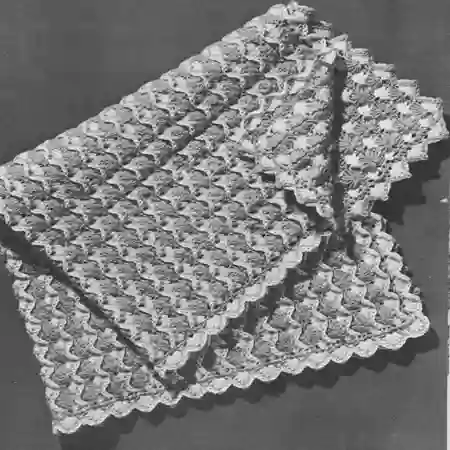
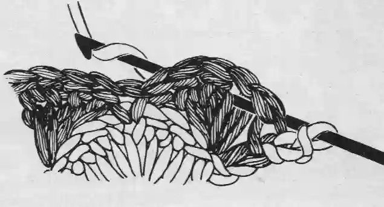

Reversible Shells
MATERIALS:
COATS 8 CLARK'S "RED HEART" KNITTING WORSTED, 4 Ply ("Tangle-Proof" Pull-Out Skeins) :
12 ounces of No. 1 White and 20 ounces of No. 510 Baby Aqua.
Crochet Hook, Size H.
Afghan measures 35 x 43 inches.
GAUGE: 1 shell and 1 sc = 1 1/2 inches; 3 rows = 1 1/2 inches.
Starting at narrow end with Baby Aqua, ch 134 to measure 35 inches.
1st Row: Sc in 2nd ch from hook, * skip 2 ch, 6 dc in next ch-shell made; skip 2 ch, sc in next ch. Repeat from * across-22 shells. Drop loop from hook.
2nd Row: Do not turn. Attach White in first sc of last row, ch 3, 3 dc in same sc-half shell made; * sc between 3rd and 4th dc of next shell, 6 dc in next sc. Repeat from * across, ending with 3 dc in last sc, yarn over, draw up a loop in same sc, yarn over, draw through 2 loops, drop White, pick up dropped Aqua loop and draw through remaining 2 loops on hook half shell made. Always change colors in this way. Break off and fasten White.
With Aqua ch 1, turn.
3rd Row: Working on right side: Sc in first dc, * keeping all loops on hook work a reverse shell over the next 7 sts as follows: (insert hook from back to front around the bar of the next st (see figure)draw loop through 7 times; yarn over and draw through all 8 loops on hook; ch 3, sc between 3rd and 4th dc of same shell. Repeat from across, ending with sc in top of ch-3. Ch 1, turn.
4th Row: Sc in first sc, * 6 dc in top of next reverse shell, sc in next sc. Repeat from * across. Drop loop from hook; do not turn.
Repeat 2nd, 3rd and 4th rows for pattern. Work in pattern until total length is about 41 inches, ending with the 3rd row and omitting turning chain. Mark the last sc made. Do not turn, but work along the ends of rows on long edge as follows: * Work 3 sc in next White ch-3, sc in the side of each of next 2 Aqua sc. Repeat from * across, ending with 2 sc in the end of last Aqua sc. Break off and fasten. Work along ends of rows on opposite long edge as follows: With right side facing, attach Aqua in the last sc on first row, * work 3 sc in side of next White dc, sc in the side of each of next 2 sc. Repeat from * across, ending with 2 sc in the end of last Aqua sc. Break off and fasten.
Edging: 1st rnd: With wrong side facing, attach White in the marked sc; ch 1, sc in same place, * 6 dc in top of next reverse shell, sc in next sc. Repeat from * across to next corner, making sc in last sc on this edge. Work along long edge as follows: ** Skip next sc, shell in next sc, skip next 2 sc, sc in next sc. Repeat from ** across to next corner; then work other 2 edges to correspond. Join with sl st to first sc. Break off and fasten.
2nd rnd: With wrong side facing, attach Aqua between the 3rd and 4th dc of shell to the right of last joining; ch 1, sc in same place, * insert hook from front to back around the bar of the next st and draw loop through, draw same loop through loop on hook-sl st made; make a sl st loosely around bar of each of next 6 sts, ch 1 loosely, sc between 3rd and 4th dc of same shell. Repeat from * around. Join, break off and fasten. Block to measurements.
